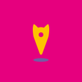

Censo de colonias y gatos del municipio
- Tenga localizadas todas las colonias y número de gatos
- Visualice los datos
- Integración de IA
- Tome decisiones informadas

Comunicación con gestoras
- Lance avisos a las gestoras
- Reciba avisos de las gestoras
- Centralice comunicación entre gestoras, ayuntamiento y servicio de recogida de animales
- Carnet/permiso digital

Cumplimiento de la Ley 7/2023 de Bienestar Animal
- Utilice Meow Metrics para cumplir lo dispuesto en el Artículo 39, "Funciones de la Administración Local", de Ley de Bienestar Animal
Personalización
- Adapte Meow Metrics al contexto de su municipio
- Personalice su experiencia
- Actualizaciones constantes gratuitas
- Servicio técnico y notificación de incidencias